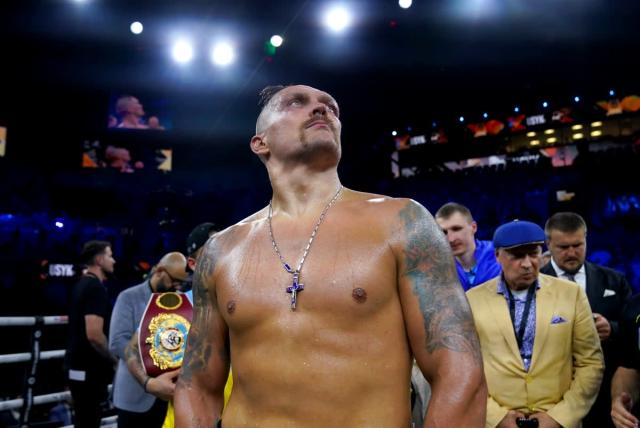

Народився в Сімферополі, Кримська область, Українська РСР, нині Автономна республіка Крим, Україна.
Олександр Усик завоював усі можливі титули любительського боксу й у жовтні 2012 року офіційно заявив про завершення аматорської кар'єри
17 вересня 2016 року в Гданську Олександр Усик провів свій десятий бій на професійному ринзі за титул чемпіона світу за версією WBO проти чинного на той момент чемпіона в першій важкій вазі поляка Кшиштофа Гловацького.
27.08.2023 досрочно виграв бій технічним нокаутом в 9 ранді.в 5-му раунді Усик змушений взяти перерву і відновитися після удару в пах від суперника
Поєдинок перервався на кілька хвилин, після чого Усик відповів точним ударом, але за правилами.
Після цього суперник явно обвис, а розв'язка поєдинку наступила в 8-9 раундів.Спочатку Усик завдав відмінного удару, але суперника врятував гонг, а в середині наступного раунду ніщо не врятувало українського Дюбуа від найсильнішого удару. Рефері почав рахувати британця,але швидко зупинив бій, побачивши, що суперник не в змозі продовжити бій.
